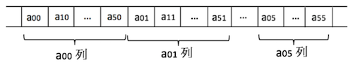
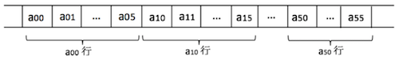

数组的顺序存储（C语言版）
要知道，对数组中存储的数据做插入和删除操作，算法的效率是很差的。
由于数组可以是多维的，而顺序存储结构是一维的，因此数组中数据的存储要制定一个先后次序。通常，数组中数据的存储有两种先后存储方式：- 以列序为主（先列后行）：按照行号从小到大的顺序，依次存储每一列的元素
- 以行序为主（先行后序）：按照列号从小到大的顺序，依次存储每一行的元素。
多维数组中，我们最常用的是二维数组。比如说，当二维数组 a[6][6] 按照列序为主的次序顺序存储时，数组在内存中的存储状态如图 1 所示：

图 1 以列序为主的二维数组存储状态
同样，当二维数组 a[6][6] 按照行序为主的次序顺序存储时，数组在内存中的存储状态如图 2 所示：

图 2 以行序为主的二维数组存储状态
C 语言中，多维数组的存储采用的是以行序为主的顺序存储方式。
通过以上内容，我们掌握了将多维数组存储在一维内存空间的方法。那么，后期如何对指定的数据进行查找和修改操作呢？多维数组查找指定元素
当需要在顺序存储的多维数组中查找某个指定元素时，需知道以下信息：- 多维数组的存储方式；
- 多维数组在内存中存放的起始地址；
- 该指定元素在原多维数组的坐标（比如说，二维数组中是通过行标和列标来表明数据元素的具体位置的）；
- 数组中数组的具体类型，即数组中单个数据元素所占内存的大小，通常用字母 L 表示；
根据存储方式的不同，查找目标元素的方式也不同。如果二维数组采用以行序为主的方式，则在二维数组 anm 中查找 aij 存放位置的公式为：
LOC(i,j) = LOC(0,0) + (i*m + j) * L;
其中，LOC(i,j) 为 aij 在内存中的地址，LOC(0,0) 为二维数组在内存中存放的起始位置（也就是 a00 的位置）。而如果采用以列存储的方式，在 anm 中查找 aij 的方式为：
LOC(i,j) = LOC(0,0) + (i*n + j) * L;
以下给出了采用以行序为主的方式存储三维数组 a[3][4][2] 的 C 语言代码实现，这里不再对该代码进行分析（代码中有详细注释），有兴趣的读者可以自行拷贝运行：
#include<stdarg.h>
#include<malloc.h>
#include<stdio.h>
#include<stdlib.h> // atoi()
#include<io.h> // eof()
#include<math.h>
#define TRUE 1
#define FALSE 0
#define OK 1
#define ERROR 0
#define INFEASIBLE -1
#define OVERFLOW 3
#define UNDERFLOW 4
typedef int Status; //Status是函数的类型,其值是函数结果状态代码，如OK等
typedef int Boolean; //Boolean是布尔类型,其值是TRUE或FALSE
typedef int ElemType;
#define MAX_ARRAY_DIM 8 //假设数组维数的最大值为8
typedef struct
{
ElemType *base; //数组元素基址，由InitArray分配
int dim; //数组维数
int *bounds; //数组维界基址，由InitArray分配
int *constants; // 数组映象函数常量基址，由InitArray分配
} Array;
Status InitArray(Array *A,int dim,...)
{
//若维数dim和各维长度合法，则构造相应的数组A，并返回OK
int elemtotal=1,i; // elemtotal是元素总值
va_list ap;
if(dim<1||dim>MAX_ARRAY_DIM)
return ERROR;
(*A).dim=dim;
(*A).bounds=(int *)malloc(dim*sizeof(int));
if(!(*A).bounds)
exit(OVERFLOW);
va_start(ap,dim);
for(i=0; i<dim; ++i)
{
(*A).bounds[i]=va_arg(ap,int);
if((*A).bounds[i]<0)
return UNDERFLOW;
elemtotal*=(*A).bounds[i];
}
va_end(ap);
(*A).base=(ElemType *)malloc(elemtotal*sizeof(ElemType));
if(!(*A).base)
exit(OVERFLOW);
(*A).constants=(int *)malloc(dim*sizeof(int));
if(!(*A).constants)
exit(OVERFLOW);
(*A).constants[dim-1]=1;
for(i=dim-2; i>=0; --i)
(*A).constants[i]=(*A).bounds[i+1]*(*A).constants[i+1];
return OK;
}
Status DestroyArray(Array *A)
{
//销毁数组A
if((*A).base)
{
free((*A).base);
(*A).base=NULL;
}
else
return ERROR;
if((*A).bounds)
{
free((*A).bounds);
(*A).bounds=NULL;
}
else
return ERROR;
if((*A).constants)
{
free((*A).constants);
(*A).constants=NULL;
}
else
return ERROR;
return OK;
}
Status Locate(Array A,va_list ap,int *off) // Value()、Assign()调用此函数 */
{
//若ap指示的各下标值合法，则求出该元素在A中的相对地址off
int i,ind;
*off=0;
for(i=0; i<A.dim; i++)
{
ind=va_arg(ap,int);
if(ind<0||ind>=A.bounds[i])
return OVERFLOW;
*off+=A.constants[i]*ind;
}
return OK;
}
Status Value(ElemType *e,Array A,...) //在VC++中，...之前的形参不能是引用类型
{
//依次为各维的下标值，若各下标合法，则e被赋值为A的相应的元素值
va_list ap;
Status result;
int off;
va_start(ap,A);
if((result=Locate(A,ap,&off))==OVERFLOW) //调用Locate()
return result;
*e=*(A.base+off);
return OK;
}
Status Assign(Array *A,ElemType e,...)
{
//依次为各维的下标值，若各下标合法，则将e的值赋给A的指定的元素
va_list ap;
Status result;
int off;
va_start(ap,e);
if((result=Locate(*A,ap,&off))==OVERFLOW) //调用Locate()
return result;
*((*A).base+off)=e;
return OK;
}
int main()
{
Array A;
int i,j,k,*p,dim=3,bound1=3,bound2=4,bound3=2; //a[3][4][2]数组
ElemType e,*p1;
InitArray(&A,dim,bound1,bound2,bound3); //构造3＊4＊2的3维数组A
p=A.bounds;
printf("A.bounds=");
for(i=0; i<dim; i++) //顺序输出A.bounds
printf("%d ",*(p+i));
p=A.constants;
printf("\nA.constants=");
for(i=0; i<dim; i++) //顺序输出A.constants
printf("%d ",*(p+i));
printf("\n%d页%d行%d列矩阵元素如下:\n",bound1,bound2,bound3);
for(i=0; i<bound1; i++)
{
for(j=0; j<bound2; j++)
{
for(k=0; k<bound3; k++)
{
Assign(&A,i*100+j*10+k,i,j,k); // 将i*100+j*10+k赋值给A[i][j][k]
Value(&e,A,i,j,k); //将A[i][j][k]的值赋给e
printf("A[%d][%d][%d]=%2d ",i,j,k,e); //输出A[i][j][k]
}
printf("\n");
}
printf("\n");
}
p1=A.base;
printf("A.base=\n");
for(i=0; i<bound1*bound2*bound3; i++) //顺序输出A.base
{
printf("%4d",*(p1+i));
if(i%(bound2*bound3)==bound2*bound3-1)
printf("\n");
}
DestroyArray(&A);
return 0;
}
运行结果为：
A.bounds=3 4 2
A.constants=8 2 1
3页4行2列矩阵元素如下:
A[0][0][0]= 0 A[0][0][1]= 1
A[0][1][0]=10 A[0][1][1]=11
A[0][2][0]=20 A[0][2][1]=21
A[0][3][0]=30 A[0][3][1]=31
A[1][0][0]=100 A[1][0][1]=101
A[1][1][0]=110 A[1][1][1]=111
A[1][2][0]=120 A[1][2][1]=121
A[1][3][0]=130 A[1][3][1]=131
A[2][0][0]=200 A[2][0][1]=201
A[2][1][0]=210 A[2][1][1]=211
A[2][2][0]=220 A[2][2][1]=221
A[2][3][0]=230 A[2][3][1]=231
A.base=
0 1 10 11 20 21 30 31
100 101 110 111 120 121 130 131
200 201 210 211 220 221 230 231
关注公众号「站长严长生」，在手机上阅读所有教程，随时随地都能学习。内含一款搜索神器，免费下载全网书籍和视频。

微信扫码关注公众号